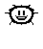
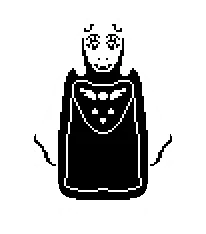
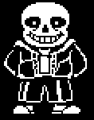
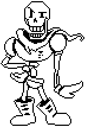
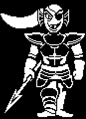
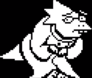
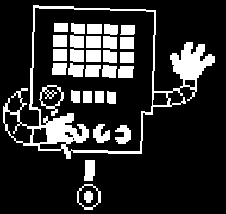
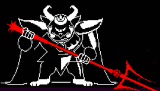
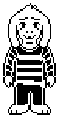

Personaje
Toate personajele principale si secundere in jocul Undertale sunt:
-
Frisk - este eroul principal cu care noi jucam. Numele lui il vom afla abia la sfarsitul
Calii Pacifiste. Frisk este unul din cei 8 oameni ce au nimerit in subteran prin
muntele Ebott. In joc ve-ti avea rolul sa-l petreceti pe protagonist in aceasta aventura si sa scapati din Subteran.

- Cum te cheama?
- ...
- "Frisk?"
- E un nume...
- Destul de frumos.
- Asriel Dreemur- Flowey - este primul personaj pe care il intalnim si cu care vorbim la inceputul jocului. Elexplică jucătorului mecanica de bază și îl încurajează să-și crească „LV”-ul (numit și „LOVE”) prin acumularea de „EXP” în urma uciderii monștrilor. El va propune apoi sa mariti „LV"-ul cu ajutorul "petalelor prietenoase".
- Salutari!
- Sunt Flowey.
- Floricica pe nume Flowey
- Toriel - este un mostru, aparatoarea Ruinelor, fosta sotie a lui Asgore si unul dintre personajele cheie a jocului. Ea ne salveaza din mainile lui Flowey, ne arata locul sau de traisi este unul din primii bosi ai jocului
- Eu sunt Toriel, aparatoarea ruinelor
- Sans - unul din personajele cheie a jocului, fratele mai mare a lui Papyrus ce se intalneste in padurea Snowdin urmarind personajul nostru si il sustine. Este un monstru glumet ce iubeste calambururile.
- Am o tona de lucru de facut pe azi...
- o schele-tona
- Papyrus - este fratele cel mic al lui Sans si bosul padurii Snowdin, in lupta cu care e imposibil sa mori. Pana la momentul luptei Papyrus reuseste sa devina din adversarul eroului nostru intr-un prieten apropiat pana la momentul bataliei
EUVOIDEVENIDEOSEBIT!
EUTREBUIESADEVINDEOSEBIT!
EUVOIPRINDEOMUL!
APOI,EU,MARELEPAPYRUS...
VOIPRIMITOTCEINTRADEVARMERIT!- Papyrus vorbeste cu Sans despre capturarea omului- Undyne - este un monstru cu aspect de peste, cu care protagonistul se intalneste la Cascada unde ea traieste. E liderul Garzii Regale si se ocupa cu prinderea oamenilor. Este al treilea bos al jocului
- LA DRACUL TOT!
- DE CE EU TREBUIE SA-TI POVESTESC ACEASTA ISTORIE
- CAND TU VEI MURI!?!
- NGAAAAAARRRRRRRRR!
- Undyne inainte de lupta cu protagonistul- Muffet - este un mini-bos al camerii checurilor facute de paianjeni si vanzatoare ce se ocupa cu vanzarea checurilor. Muffet se enerveaqza pe trecatorii care nu cumpara nimic, deoarece preturile sunt exagerate. Uraste oamenii, fiindca crede ca ei sunt cruzi in privinta paianjenilor.
 Arati foarte posomorat, Dragutule~
Arati foarte posomorat, Dragutule~
...Eu cred, ca in violet ti-ar sta mai bine!
Uhuhuhu~- Muffet schimband culoarea sufletului jucatorului.- Alphis - este unmonstru asemanator cu o reptilie. Ea este omul de stiinta regal, postul castigand in urma crearii robotului cu suflet Mettaton. Jucatorul prima oara o intalneste in laboratorul din Hotland care este si casa ei
- Em-m-m...
- S-s-salut!
- Eu sunt Alphis.
- Omul de stiinta REGAL!
- Alphis- Mettaton - este un robot cu suflet facut de Alphis pentru distractia locuitorilor Subteranei. Mettaton e unica si in acelasi timp cea mai populara vedeta din Subterana. Este al patrulea bos din Undertale
- ADEVARATA DRAMA!!
- ADEVARATA TENSIUNE!!
- ADEVARATA BATAIE
- IN SHOWL NOSTRU NOU...
- «ATACUL ROBOTULUI-UCIGAS»
- Mettaton inaintea luptei cu eroul principat.- Asgore Dreemur - este regele intregului taram subteran, fostul sot al lui Toriel, tatal lui Asriel Dreemur si Ultimul bos al jocului
Nefiind un exeplu al rautatii, Asgore apare drept un adversar, deoarece vrea sa omoare protagionistul si sa-i foloseasca sufletul lui si inca 6 pentru a distruge Bariera ce tine toti monstrii sub pamant.Omule...
Mi-a fost placut sa fac cunostinta cu tine.
Adio.- Asgore chiar inaintea luptei cu jucatorului.- Asriel Dreemur - este printul monstrilor, fiul lui Toriel si Asgore, firea adevarata a lui Flowey si bosul final al jocului in una din variatiile subiectului (calea Pacifista)
Salut Frisk...
Demult nu ne-am vazut.- Asriel